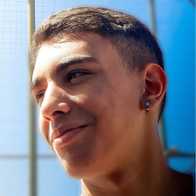

Alerta de queda de detritos espaciais para defesa civil, aviação e população.
VÍDEO-PITCH · ~3 MIN
ECONOMIA ESPACIAL · COBERTURA GLOBAL, FOCO BRASIL
O problema
Tudo que sobe acaba descendo, e em volume cada vez maior.
>3/dia
objetos intactos reentram na atmosfera, em ritmo crescente (ESA, 2024)
~2/sem
corpos de foguete reentram sem controle; 2.300+ ainda esperam em órbita
20–40%
da massa sobrevive ao calor da reentrada e chega ao solo
As megaconstelações são desativadas ao fim da vida útil e caem. O volume aumenta a cada ano, e ninguém avisa quem está embaixo.
Fontes: ESA Space Environment Report 2025 · Scientific Reports 2024 (Pardini & Anselmo, PMC11757734) · Nature Astronomy 2022 (arXiv:2210.02188).
O ritmo aumenta
E a cada ano, mais coisa cai.
115 → 950
reentradas de satélite por ano, de 2019 a 2024 (8x em cinco anos)
~80 → 263
lançamentos orbitais por ano, comparando 2010–2014 com 2024
490 t
de massa reentraram em 2024, recorde histórico
Mais lançamentos significam mais satélites no fim da vida e mais reentradas. A tendência não se inverte tão cedo.
Fontes: MIT Technology Review 2024 (Jonathan McDowell, Harvard-Smithsonian) para reentradas e lançamentos · ESA / workshop ESTEC 2025 para a massa reentrada.
O risco é mensurável
O risco já está medido: pessoas no solo e aviação.
~10%
de chance de 1+ vítima no solo por queda de detrito de foguete na próxima década
645
voos atrasados quando Espanha e França fecharam o espaço aéreo (nov/2022)
~26%/ano
de uma reentrada cruzar espaço aéreo movimentado
São dois riscos distintos: gente no solo e aviação. Fechar espaço aéreo custa caro mesmo sem impacto; o risco já é operacional.
Risco de vítima: Nature Astronomy 2022 (Byers, Wright & Boley); estimativa elevada a 20–29% em revisão de 2024. Voos e espaço aéreo: Scientific Reports 2025 (Wright, Boley & Byers, DOI 10.1038/s41598-024-84001-2).
Brasil · já está caindo aqui
No Brasil o risco é ainda maior, e já virou realidade.
~3x
mais risco de impacto na faixa equatorial (onde está o Brasil) que em NY, Pequim ou Moscou
2012
Maranhão: esfera de ~50 kg de um Ariane 44L abriu cratera de 1 m num quintal
2022
Paraná: fragmento de ~4 m de um Falcon 9, confirmado pela AEB
Reentradas visíveis sobre MT, GO, DF, MG e BA (mai/2025) e o Long March 7A (out/2025), sem nenhum alerta do DECEA. Quem está embaixo não é avisado.
Fontes: Nature Astronomy 2022 (faixa de latitude) · AEB / Gazeta do Povo (Paraná 2022) · Space.com (Maranhão 2012) · BRAMON / Correio Braziliense (reentradas 2025).
A lacuna
Cuidam da colisão lá em cima. Ninguém avisa o solo.
Aerospace CORDS, ESA e Space-Track existem, mas são para especialista: dado cru, em inglês, alguns com login do governo dos EUA. Não têm índice de risco, camada de aeroportos nem alerta por e-mail. Nenhuma ferramenta pública em português.
SSA enterprise/defesa, foco em evitar colisão entre satélites. Caro, B2B.
No solo (vazio)
WhereItFalls
Traduz a reentrada em risco regional acionável para aviação, defesa civil e seguro. Cobertura global, acessível, com foco inicial no Brasil.
A solução
Eles evitam colisão lá em cima. WhereItFalls avisa quem está embaixo.
Uma plataforma que consome previsões de reentrada, calcula o corredor de risco no solo e dispara alertas (mapa de calor, e-mail e webhook) para regiões, aeroportos e órgãos sob a faixa de incerteza. É ferramenta de decisão, sem alarmismo.
Como funciona
Do dado orbital ao alerta no chão.
01 · INGEST
Previsão
Space-Track TIP + CelesTrak + Aerospace CORDS. Dado-fonte gratuito.
02 · ÓRBITA
Ground-track
skyfield propaga a órbita na janela de incerteza → trilha no solo.
03 · RISCO
Corredor
shapely + PostGIS cruzam o corredor com aeroportos e regiões → índice 0–100 + tier.
04 · ALERTA
Ação
Mapa, globo 3D, e-mail e webhook para quem está sob a faixa.
mercado de Space Situational Awareness (2025 → 2034), CAGR ~7–10%
~0
custo de dado-fonte (Space-Track / CelesTrak / CORDS são gratuitos) → margem alta
B2G+B2B
compradores já contratam SSA comercial (US Office of Space Commerce, UK Space Agency)
Defesa civil · DECEA · FAB
Aviação · companhias · aeroportos
Seguradoras · underwriting de risco
Marítimo · portos · rotas
Modelo de negócio
API freemium.
Free
Público
Reentradas previstas, risco por região, mapa de calor, histórico. Bem social + adoção.
Pro
Aviação / Defesa civil
Assinatura de alerta (e-mail/webhook), SLA, alerta por região. DECEA, aeroportos, companhias.
Insurance
Seguradoras
Score por ativo/apólice + analytics histórico + incerteza detalhada para subscrição.
Impacto
Um problema espacial com consequências bem terrestres.
▸Segurança de passageiros e de quem está no solo: o aviso que FAA/UNOOSA/IAA pedem e não existe acessível.
▸Equidade: corpos de foguete têm ~3x mais chance de cair nas latitudes de Jakarta, Lagos e do Brasil que nas de NY ou Moscou; as potências espaciais exportam o risco ao Sul Global. A cobertura é global; o Brasil é o primeiro caso de uso.
▸Acesso: tier público grátis democratiza um alerta hoje trancado em silos de defesa.
Visão
Do protótipo à malha de alerta operacional.
HOJE
Protótipo funcional
Dados globais (Space-Track), corredor + índice 0–100, mapa e globo 3D, alerta por e-mail/webhook.
PRÓXIMO
B2B
Webhooks, tier seguradoras, integração com despacho aéreo e defesa civil.
VISÃO
Operação com SLA
Rede de alerta com SLA + parcerias com autoridades de aviação e defesa civil.
WhereItFalls
O céu está mais cheio. Alguém precisa avisar o chão.
Murilo Alves de Moura
RM 98220
Gabriel Da Silva Freitas
RM 551195
Mateus Vicente
RM 550521
Roberto Felix de Araújo Guedes
RM 99976

Felipe Neves Cavalcanti
RM 551619
OBRIGADO · FIAP GS — SPACE CONNECT github.com/badmuriss/whereitfalls · vídeo no entregável